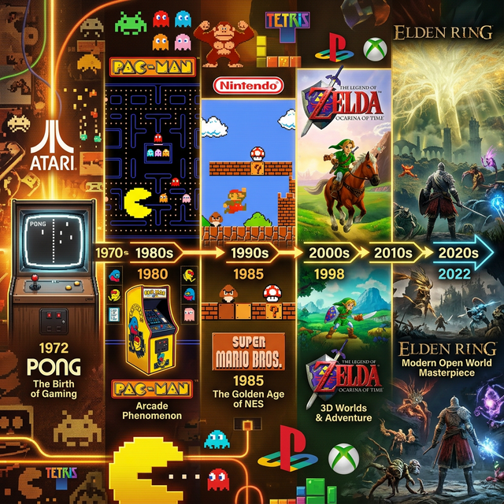

Від Pong до Elden Ring — історія розвитку відеоігор охоплює десятиліття технічного прогресу та культурних змін.
Перейти до епохи: 1970-ті | 1980-ті | 1990-ті | 2000-ні | 2020-ні | Вікіпедія | Головна

Pong (1972) — одна з перших комерційно успішних відеоігор, створена компанією Atari.
У цей період з'явилися перші аркадні автомати, які швидко стали популярними в ігрових залах і торгових центрах по всьому світу.
Перші відеоігри були примітивними за графікою, але революційними за концепцією.
Pac-Man (1980) став культурним феноменом і одним із найвідоміших персонажів у світі ігор.
У 1985 році Nintendo випустила Super Mario Bros., яка стала однією з найвпливовіших ігор свого часу та врятувала ігрову індустрію після краху 1983 року.
У 1990-х роках ігри перейшли від двовимірної графіки до повноцінних тривимірних світів завдяки новим графічним чипам та CD-ROM.
Doom (1993) і Quake (1996) суттєво вплинули на розвиток жанру шутерів. PlayStation (1994) відкрила нову еру консолей.
Початок нового тисячоліття приніс стрімкий розвиток онлайн-ігор і цифрової дистрибуції через Steam та інші платформи.
World of Warcraft (2004) став найвідомішим прикладом масових онлайн-ігор із мільйонами підписників.
Сучасні відеоігри характеризуються фотореалістичною графікою, швидкими SSD накопичувачами та розвитком хмарного гейм. Штучний інтелект відкриває нові горизонти у процедурній генерації контенту.
Серед найвідоміших ігор останніх років — Elden Ring, Baldur's Gate 3 та Alan Wake 2.
→ Переглянути каталог сучасних ігор| Десятиліття | Ключова технологія | Відомі ігри | Вплив |
|---|---|---|---|
| 1970–80 | Аркадні автомати | Pong, Pac-Man | Народження індустрії |
| 1980–90 | Домашні консолі | Mario, Tetris | Масова аудиторія |
| 1990–00 | 3D-графіка, CD-ROM | Doom, FF7, Mario 64 | Революція 3D |
| 2000–10 | Онлайн-ігри | WoW, Counter-Strike | Масовий мультиплеєр |
| 2010–20 | Мобільні ігри, free-to-play | Minecraft, Fortnite | Гейм для всіх |
| 2020+ | Ray Tracing, SSD, AI | Elden Ring, BG3 | Фотореалізм, хмарний гейм |